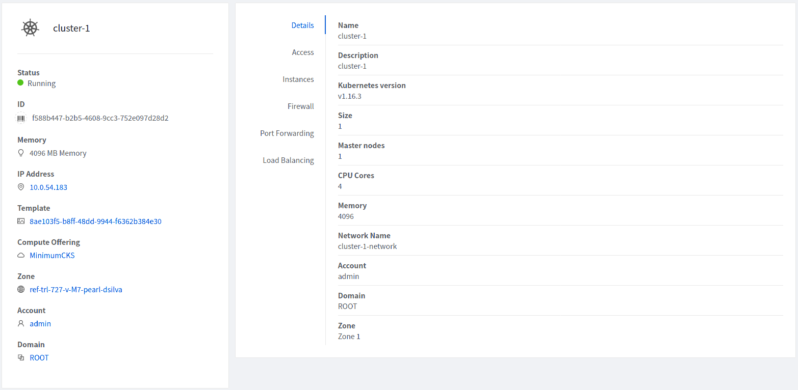

Kubernetes Management#
For Kubernetes cluster management, the service provides create, stop, start, scale, upgrade and delete APIs and similar features in the UI.
Creating a new Kubernetes cluster#
New Kubernetes clusters can be created using the API or via the UI. User will be provided with an ‘Add Kubernetes Cluster’ form as shown below,
Users will be provided with an optional section displayed on toggling the ‘Show Advanced Settings’ button. In this section, users can select templates and service offerings for: - Worker nodes - Control nodes - Etcd nodes (if etcd node count >= 1; By default etcd node count is 0)
createKubernetesCluster API can be used to create new Kubernetes cluster. It takes following parameters as input,
name (name for the Kubernetes cluster; Required)
description (description for the Kubernetes cluster)
zoneid (availability zone in which Kubernetes cluster to be launched; Required)
clustertype (Define the type of cluster: CloudManaged (managed by Zergaw CloudStack), ExternalManaged (managed by an external kubernetes provider). Defaults to CloudManaged)
kubernetesversionid (Kubernetes version with which cluster to be launched; Required for CloudManaged clusters)
serviceofferingid (the ID of the service offering for the Instances in the cluster; Required for CloudManaged clusters)
account (an optional Account for the Instance. Must be used with domainId)
domainid (an optional domainId for the Instance. If the account parameter is used, domainId must also be used)
projectid (Deploy cluster for the project)
networkid (Network in which Kubernetes cluster is to be launched)
keypair (name of the ssh key pair used to login to the Instances)
controlnodes (number of Kubernetes cluster control nodes, default is 1)
externalloadbalanceripaddress (external load balancer IP address while using shared Network with Kubernetes HA cluster)
size (number of Kubernetes cluster worker nodes; Required for manage clusters)
noderootdisksize (root disk size of root disk for each node)
dockerregistryusername (username for the docker image private registry; Experimental)
dockerregistrypassword (password for the docker image private registry; Experimental)
dockerregistryurl (URL for the docker image private registry; Experimental)
dockerregistryemail (email of the docker image private registry user; Experimental)
hypervisor (an optional parameter to specify the hypervisor on which the Kubernetes cluster will be deployed)
nodeofferings (an optional map parameter to set the service offerings for worker, control or etcd nodes. If this parameter is not set, then every VM in the cluster will be deployed using the default service offering set on the serviceofferingid parameter)
etcdnodes (An optional integer parameter that specifies the number of etcd nodes in the cluster. The default value is 0. If set to a value greater than 0, dedicated etcd nodes are created separately from the master nodes.)
nodetemplates: (an optional map parameter to set the template to be used by worker, control or etcd nodes. If not set, then every VM in the cluster will be deployed using the System VM template)
asnumber (an optional parameter to set the AS Number of the Kubernetes cluster network)
cniconfigurationid (an optional parameter to set the UUID of a registered CNI configuration)
cniconfigdetails (an optional parameter to specify the parameters values for the variables defined in the CNI configuration)
For example:
> create kubernetescluster name=Test description=Test-Cluster zoneid=34d23dd5-5ced-4e8b-9b0a-835a0b8ae2a6 size=1 noderootdisksize=10 serviceofferingid=a4f280a1-9122-40a8-8f0c-3adb91060f2a kubernetesversionid=6668e999-fe6c-4a91-88d8-d10bcf280d02
{
"kubernetescluster": {
"associatednetworkname": "Test-network",
"cpunumber": "4",
"description": "Test-Cluster",
"endpoint": "https://172.20.20.12:6443/",
"id": "74e3cc02-bbf7-438f-bfb0-9c193e90c1fb",
"kubernetesversionid": "6668e999-fe6c-4a91-88d8-d10bcf280d02",
"kubernetesversionname": "v1.13.2",
"controlnodes": 1,
"memory": "4096",
"name": "Test",
"networkid": "148af2cb-4b94-42a2-b701-3b6aa884cbb0",
"serviceofferingid": "a4f280a1-9122-40a8-8f0c-3adb91060f2a",
"serviceofferingname": "CKS Instance",
"size": 1,
"state": "Running",
"templateid": "17607ed6-1756-4ed7-b0f4-dbab5feff5b2",
"virtualmachineids": [
"da2cb67e-e852-4ecd-b16f-a8f16eb2c962",
"4179864a-88ad-4d6d-890c-c9b73c53589b"
],
"zoneid": "34d23dd5-5ced-4e8b-9b0a-835a0b8ae2a6",
"zonename": "KVM-advzone1"
}
}
On successful creation, the new cluster will automatically be started and will show up in Running state. If creation of the new cluster fails it can be in following states: - Alert – When node Instances were successfully provisioned, and cluster API server is accessible but further provisioning steps could not be completed. - Error – When the service was unable to provision the node Instances for the cluster or if the cluster API server is not accessible.
Note
A minimum of 2 cores of CPU and 2GB of RAM is needed for deployment. Therefore, the serviceofferingid parameter of createKubernetesCluster API must be provided with the ID of such compute offerings that conform to these requirements.
Private docker registry related parameters of createKubernetesCluster API (dockerregistryusername, dockerregistryusername, dockerregistryurl, dockerregistryemail) provides experimental functionality.
Listing Kubernetes clusters#
listKubernetesCluster API can be used to list existing Kubernetes clusters. id parameter can be passed as input to list details of a single supported version.
Stopping Kubernetes cluster#
A running Kubernetes cluster can be stopped using either the stopKubernetesCluster API which takes id of the cluster as an input parameter or action icon from UI. action icon is shown for a running cluster in the UI.
Note
This operation is supported only for CloudManaged kubernetes cluster.
Starting a stopped Kubernetes cluster#
A stopped Kubernetes cluster can be started using either the startKubernetesCluster API which takes id of the cluster as the input parameter or the action icon from UI. action icon is shown for a stopped cluster in the UI.
When the service fails to start a stopped cluster, the cluster will show in Alert state else it will show up as Running.
Note
This operation is supported only for CloudManaged kubernetes cluster.
Scaling Kubernetes cluster#
A running or stopped Kubernetes cluster can be scaled using both API and UI.  action icon is shown for a running cluster in the UI which opens the form shown below,
action icon is shown for a running cluster in the UI which opens the form shown below,

scaleKubernetesCluster API can be used to scale a running (or stopped cluster) to a desired cluster size and service offering. It takes the following parameters as input:
id (the ID of the Kubernetes cluster to be scaled; Required)
serviceofferingid (the ID of the new service offering for the Instances in the cluster)
size (number of Kubernetes cluster worker nodes)
Only running Kubernetes clusters can be scaled in size. When the service fails to scale the cluster, the cluster will show in Alert state else if the scaling is successful cluster will show up in Running state.
Note
Only up scaling is supported while scaling clusters for service offering.
This operation is supported only for CloudManaged kubernetes cluster
Upgrading Kubernetes cluster#
A running Kubernetes cluster can be upgraded using both API and UI. action icon is shown for a running cluster in the UI which opens the form shown below,

upgradeKubernetesCluster API can be used to upgrade a running cluster. It takes the following parameters as input:
id (the ID of the Kubernetes cluster to be upgraded; Required)
kubernetesversionid (Kubernetes version with which cluster to be launched; Required)
When the service fails to upgrade the cluster, the cluster will show up in Alert state, else if successful, the cluster appears Running state.
Note
Kubernetes can be upgraded from one MINOR version to the next MINOR version, or between PATCH versions of the same MINOR. That is, you cannot skip MINOR versions when you upgrade. For example, you can upgrade from 1.y to 1.y+1, but not from 1.y to 1.y+2. Therefore, service can upgrade running clusters in the similar manner only.
This operation is supported only for CloudManaged kubernetes cluster
Deleting Kubernetes cluster#
A kubernetes cluster can be deleted using either the deleteKubernetesCluster API which takes cluster id as the input parameter or the  action icon from the UI.
action icon from the UI.
The Kubernetes service runs a background state scanner process which regularly checks the cluster health. For clusters in Alert state, this background process verifies their state and moves them to Running state if all node Instances of the cluster are running and the API server for the cluster is accessible.
Working with Kubernetes cluster#

Once a Kubernetes cluster is created successfully and is in Running state, it can be accessed using the kubectl tool using the cluster’s kubeconfig file. The web dashboard can be accessed by running a local proxy using kubectl. Deployments in the cluster can be done using kubectl or web dashboard. More about deployment in Kubernetes here: https://kubernetes.io/docs/concepts/workloads/controllers/deployment/
Accessing Kubernetes cluster#
Instructions for accessing a running cluster will be shown in Access tab in the UI.
The service provides functionality to access kubeconfig file for a running Kubernetes cluster. This can be done using the UI or API. Action icon is shown in cluster detail UI to download kubeconfig file. UI will show download links for kubectl tool for different OS based on the cluster version.
getKubernetesClusterConfig API can be used to retrieve kubeconfig file data for a cluster. It takes id of the cluster as the input parameter.
Note: The User Data and Metadata of the underlying host can be accessed by the container running on the CKS cluster. If you want prevent the access follow the below steps
- The User Data and Metadata of the underlying worker-nodes can be accessed by the containers running on the CKS cluster
For example: Deploy a container on a CKS cluster
kubectl exec -it <container> -- /bin/sh
curl http://data-server/latest/meta-data/
service-offering
availability-zone
local-ipv4
local-hostname
public-ipv4
public-hostname
instance-id
vm-id
public-keys
cloud-identifier
hypervisor-host-name
curl http://data-server/latest/user-data/
- If you want to prevent the access of User Data and Metadata from the containers running on CKS cluster, Execute the following yaml
kubectl apply -f deny-meta-data.yaml
apiVersion: networking.k8s.io/v1
kind: NetworkPolicy
metadata:
name: deny-metadata-access
spec:
podSelector: {}
policyTypes:
- Egress
egress:
- to:
- ipBlock:
cidr: 169.254.188.68/32
ports:
- protocol: TCP
port: 80
Kubernetes cluster web dashboard#
The service while creating a cluster automatically deploys dashboard for the cluster. More details about Kubernetes dashboard here: https://kubernetes.io/docs/tasks/access-application-cluster/web-ui-dashboard/
Instructions for accessing the dashboard for a running cluster will be shown in the Access tab in the UI. Essentially, the user needs to run a local proxy first using kubectl and kubecofig file for the cluster to access the dashboard. For secure login, the service doesn’t enable kubeconfig based login for the dashboard. Token-based access is enabled and kubectl can be used to access service Account secret token.
The following command can be used, while passing the correct path to kubeconfig file, to run proxy:
# kubectl --kubeconfig /custom/path/kube.config proxy
Once the proxy is running, users can open the following URL in the browser to access the dashboard,
http://localhost:8001/api/v1/namespaces/kubernetes-dashboard/services/https:kubernetes-dashboard:/proxy/
Token for dashboard login can be retrieved using the following command:
# kubectl --kubeconfig /custom/path/kube.config describe secret $(kubectl --kubeconfig /custom/path/kube.config get secrets -n kubernetes-dashboard | grep kubernetes-dashboard-token | awk '{print $1}') -n kubernetes-dashboard